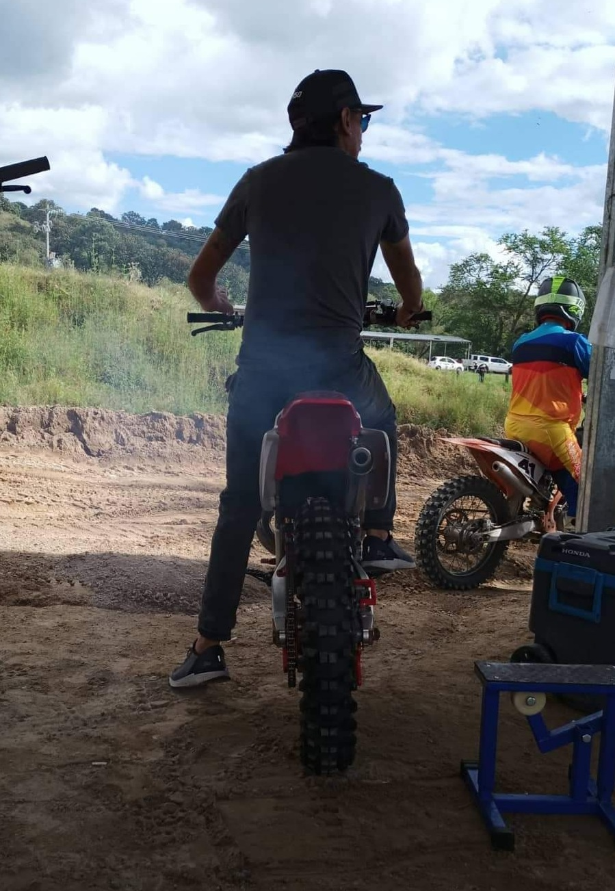

León is a passionate individual with a diverse range of hobbies. He has a love for adrenaline and the outdoors, which is reflected in his interests. Whether it's riding motorcycles or tackling tough mountain biking trails, León is always seeking new adventures that test his skills and endurance
One of his favorite activities is riding motorcycles. The thrill of speeding down the open road on two wheels is a freedom León deeply enjoys. It’s not just about the ride; it’s about the connection with the machine and the environment around him. The power and precision required to navigate different terrains make it an exciting experience every time.
In addition to motorcycles, León also enjoys mountain biking. The challenge of steep inclines, rugged paths, and technical descents gives him a strong sense of accomplishment. Exploring new trails and pushing physical limits are some of the reasons he loves this sport. It's an activity that combines his love for fitness and adventure.
